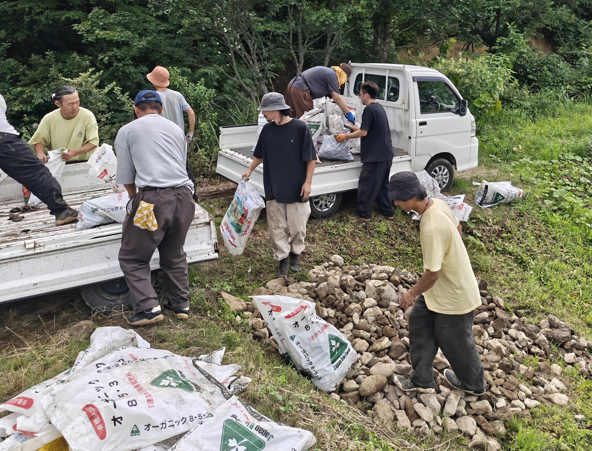
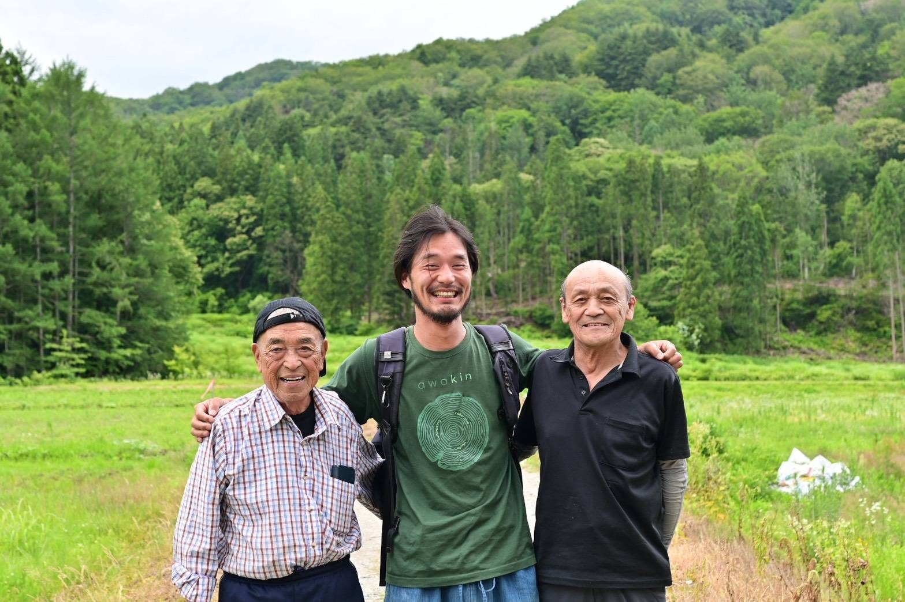

Meet SHINDO's founding members, Munokai Natural Farm as our base, the craftspeople who support the field, partners from across Japan, and the villagers who work alongside us in Showa Village.
The company that runs SHINDO, which builds the foundations of life from natural farming in Aizu and Oku-Aizu, Fukushima. We bring people active in fields other than farming from across Japan to Aizu, and through dialogue on the ground, turn ideas into projects one by one. By putting people, resources, and money to good use, we create a place for co-creation where both our companions and the region grow richer.
After aspiring to be a scholar, he turned to natural farming in search of a livelihood closer to the essentials. He visited more than 30 farms across Japan before moving to Aizu in 2021. The founder of SHINDO.
The founder's note →Moved to Aizu in the winter of his senior year of university. He leads education and site development, bridging city students and rural farming.
SHINDO is a project run by ZEN-BU Inc. Co-creation partner agreements with partners and service contracts with field members are both concluded with ZEN-BU, and the financial statements for the project are published under ZEN-BU's name.
In these snowy highlands, it is local skill that makes both life and business possible.
More than 35 partners from across Japan are involved.

Produced our short film. Mogi moved to Aizu in 2026.
Supports our web and podcast communications, and works in the field too.
Plans and runs our social media.
Comes to help on the farm a few times a year, in groups of about ten.
The whole company takes part on the ground. In spring 2026, 65 people came together.
Natural and organic farmers, doctors, inventors, and small business owners from across Japan.
Together with the villagers who have sustained this community, we are building a future that continues from the life, water, land, and shared labor that already exist here.

With the residents of Onogawa ／ Onogawa, Showa Village
Founded 21 years ago, the largest JAS-certified organic farm in Fukushima, and the source of SHINDO's practical knowledge. Both founders, Uno and Ōshima, started out by learning to farm here.
In his twelfth year of farming. Stabilized seedling production and expanded the cultivated area.
Left a company in Tokyo three years ago for Aizu. Responsible for rice cultivation and farm management at Munokai.
Moved from Sapporo in 2025. Runs vegetable growing at Munokai.
Formerly at a car dealership. Responsible for no-till cultivation and machinery development.
Twelve years of growing vegetables. Continues to experiment with no-till cultivation.
We are looking for people to walk the next stretch with us.
See the three ways to take partBuilding the foundations of life in Aizu and Oku-Aizu.
A path toward a new kind of abundance.
Published by ZEN-BU Inc.